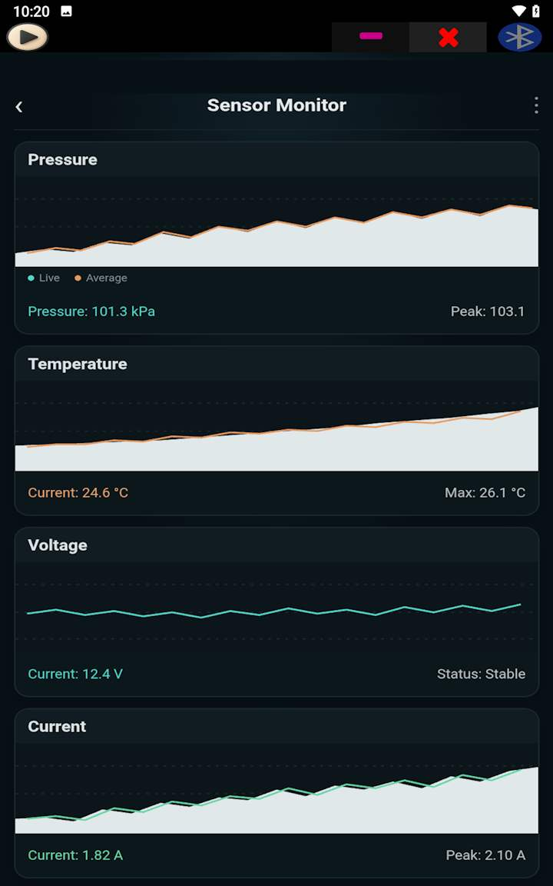
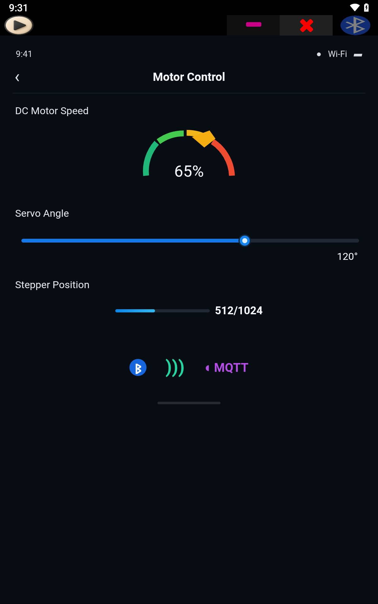
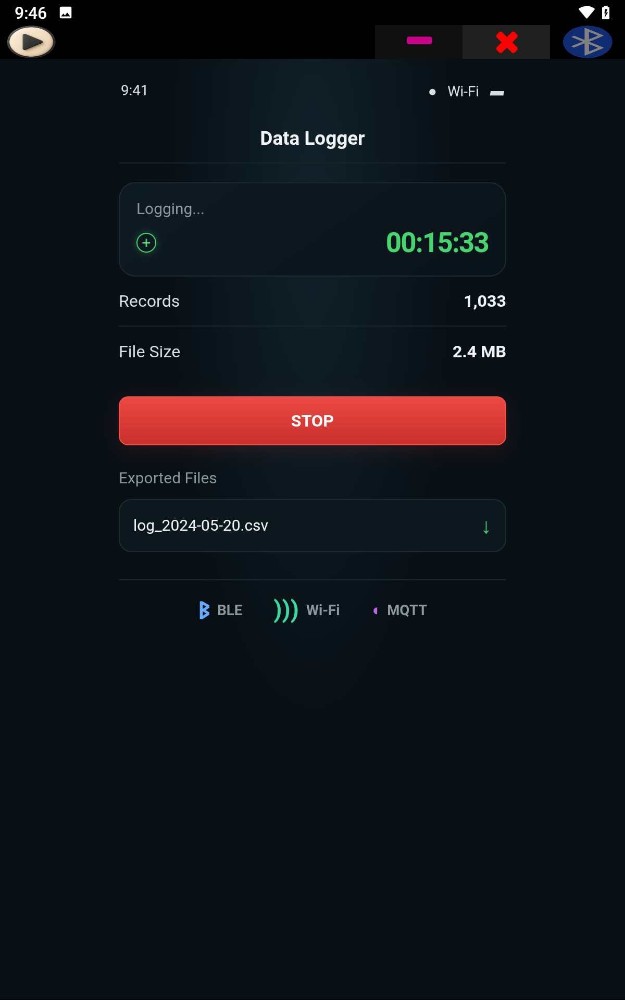

Créez l'outil de vos rêves en HTML et exécutez-le sur Android
SoifGo est une application Android gratuite pour concevoir et archiver des outils personnalisés : calculatrices, simulateurs, outils pédagogiques, tableaux de bord et contrôleurs matériels, sans nécessiter de programmation native Android.



SoifGo ; une application Android rapide et efficace, pour qui ?
Aujourd'hui, la plupart des besoins – des calculs et simulations aux tableaux de bord et panneaux de contrôle personnalisés – peuvent être facilement mis en œuvre. Concentrons-nous sur les forces de SoifGo.
SoifGo exécute vos outils au format HTML et les organise dans des dossiers. Puisque le HTML prend en charge tout ce qui est possible sur les pages Web, son champ d'application est extrêmement large : des calculatrices et simulations aux outils pédagogiques, tableaux de bord et, si nécessaire, au contrôle matériel via Bluetooth et MQTT. Si vous savez écrire une page Web ou expliquer vos besoins à un assistant IA, vous pouvez créer votre propre outil.
Pour qui SoifGo a-t-il été conçu ?
📐 Mathématiciens et étudiants
Calculatrices spécialisées, graphiques et fonctions, simulations et outils de résolution de problèmes adaptés à vos besoins.
🎓 Enseignants et formateurs
Outils interactifs pour la classe, exercices et quiz. Envoyez le fichier aux étudiants ou aux apprenants pour qu'ils l'exécutent directement.
🏗️ Ingénieurs de toutes disciplines
Calculatrices d'ingénierie, convertisseurs d'unités et feuilles de calcul personnelles toujours disponibles au travail et hors ligne.
🔌 Passionnés et développeurs en électronique
Panneaux de contrôle et modules Bluetooth et MQTT pour Arduino, ESP32, ESP8266 et Raspberry Pi.
💡 Toute personne ayant une idée
Partagez votre idée avec un assistant IA, obtenez le code HTML et exécutez-le dans SoifGo.
Gestion des dossiers et des pages
SoifGo vous fournit des dossiers et des pages pour organiser soigneusement votre travail. Sur chaque page, vous disposez de 40 boutons et de 10 curseurs (sliders), et vous pouvez configurer chaque bouton pour des comportements spécifiques, y compris la navigation entre les dossiers et pages de SoifGo pour créer des menus à plusieurs niveaux.
Les boutons intègrent des options de design prédéfinies : couleur, icône, nom, police, son, vibration et prise en charge du glisser-déposer (drag-and-drop). Chaque bouton peut exécuter des tâches de base d'entrée et de sortie.
Comportement Web, en ligne et hors ligne
Le « Comportement Web » (WebView) vous aide à concrétiser vos idées et exigences avec un maximum de flexibilité au format HTML, que vous soyez connecté ou non. Il vous suffit d'expliquer votre besoin à un assistant IA et de demander le code HTML. Vous avez ensuite deux options :
- Téléchargez le fichier et chargez-le (rechargez-le) à l'aide du comportement Web hors ligne dans SoifGo.
- Ou copiez le code et collez-le dans l'éditeur HTML intégré de SoifGo.
Les deux méthodes fonctionnent, et votre application Web est archivée dans le dossier SoifGo ; qu'il s'agisse d'une calculatrice, d'un contrôleur Bluetooth, d'une surveillance IoT ou de tout autre outil personnalisé.
40 applications Web différentes par page
Vous pouvez avoir jusqu'à 40 applications Web différentes sur chaque page. Inutile de les redemander sans cesse à l'assistant IA, et vous pouvez travailler avec elles hors ligne. Vous pouvez même les partager avec des collègues, des amis ou des apprenants pour qu'ils les téléchargent et les exécutent.
Fonctionnalités
🌐 WebView complète
Moteur de navigateur moderne : Canvas, SVG, WebGL et bibliothèques telles que Chart.js, D3 et Three.js pour les graphiques, simulations et visualisations 3D.
🧩 Mode classique
Boutons et curseurs prépréparés sans aucun code pour des contrôles simples et des menus.
💾 Stockage local
Persistance des données via localStorage, même après la fermeture de l'application.
🟢 Capteurs du téléphone
Lumière ambiante, mouvement (accéléromètre) et magnétomètre en direct et en temps réel.
🎤 Microphone et reconnaissance vocale
Convertissez la parole en texte pour l'utiliser dans vos outils ou l'envoyer aux appareils.
🔵 Bluetooth Serial
Envoi et réception de texte avec HC-05, HC-06, JDY-31, Arduino, ESP32 et Raspberry Pi.
🟣 Client MQTT
Connexion à n'importe quel broker (tcp ou ssl), publication et souscription, et surveillance de l'état de la connexion.
🟠 API HTTP
Envoi de JSON à n'importe quelle adresse, réception et extraction de valeurs à partir de la réponse.
Que peut-on construire ?
- Calculatrices spécialisées et outils de calcul
- Graphiques, simulations et visualisation de données
- Outils pédagogiques interactifs, exercices et quiz
- Présentations 3D et outils scientifiques
- Tableaux de bord et panneaux de contrôle personnalisés pour votre travail
- Contrôle de luminaires (LED), moteurs, relais et robots via Bluetooth et ponts Bluetooth vers MQTT
- Commande vocale d'appareils par la parole
Foire aux questions (FAQ)
SoifGo est-il uniquement réservé à Arduino et à l'électronique ?
Non. La connexion matérielle n'est qu'une de ses fonctionnalités. Étant donné que les outils reposent sur le HTML, tout ce qui est possible sur les pages Web (comme les calculs, les graphiques, les simulations et les outils pédagogiques) fonctionne également de manière fluide dans SoifGo.
L'application SoifGo est-elle gratuite ?
Oui, elle est entièrement gratuite, sans publicité ni achats intégrés.
Fonctionne-t-elle hors ligne ?
Les outils HTML, le Bluetooth et les capteurs du téléphone fonctionnent hors ligne. Seuls MQTT et HTTP nécessitent une connexion Internet ou réseau.
Quels systèmes sont compatibles pour la connexion matérielle ?
Tout appareil prenant en charge Bluetooth SPP (comme HC-05 et HC-06), MQTT ou HTTP REST ; y compris Arduino, ESP32, ESP8266 et Raspberry Pi.
De quoi ai-je besoin pour commencer ?
Des connaissances de base en HTML suffisent. Même sans cela, vous pouvez demander le code HTML à un assistant IA. Des tutoriels et des exemples prêts à l'emploi sont disponibles sur la page d'accueil.